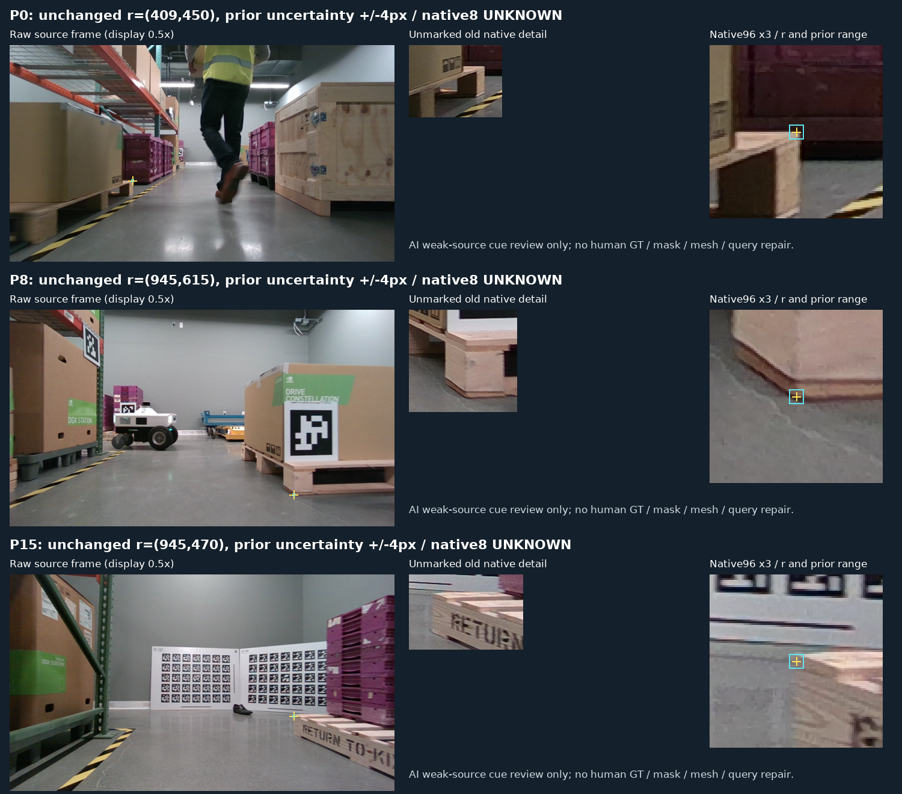

실제 목재 코너·부분선 cue는 세 곳 모두 관찰됩니다. 저장된 selected top1 query에는 FULL cue crop이 없고, canonical native8 대응은 세 곳 모두 UNKNOWN입니다.
사용자는 현재 평가 223장을 직접 촬영했고 KU Leuven 자료와 무관하다고 확인했습니다. 평가셋의 학습·문턱 선택 제외 원칙을 유지했습니다.
| 고정 cue | 저장 후보 수 | 모든 후보의 FULL q crop | selected top1 FULL | native8 대응 |
|---|---|---|---|---|
| P0 | 5 | 2 | 0 | UNKNOWN |
| P8 | 6 | 5 | 0 | UNKNOWN |
| P15 | 0 | 0 | 0 | UNKNOWN |
P0의 selected crop은 cue 중심이 경계 바로 밖이고 원 ±4px 범위 일부만 겹칩니다. P8의 selected 후보는 뒤쪽 다른 대상입니다. P15에는 검출이 없습니다. 다른 후보의 FULL 7개는 가용성 진단이며 GT로 후보를 바꾸지 않았습니다.

두 AI 검토자의 관찰은 약한 source 증거이며 사람 gold가 아닙니다. 원래 ±4px 범위도 정밀 좌표 보증은 아닙니다. cue가 crop 밖인 경우를 가림 음성으로 바꾸지 않았습니다.
다음 작업은 Pallox의 같은 자세 촬영 쌍입니다. 가림 전 영상에서 실제 cue를 먼저 고정한 뒤, 가림 후 영상의 같은 cue와 외부 blocker를 확인합니다. 이 단계에서는 새 학습·모델 추론·현재 평가·PnP를 실행하지 않습니다.